Interactive simulator
Run TEMPO firmware in your browser: a cycle-exact port of the golden model (ISA v0.2 + v0.3) with the as-built WAIT / illegal-opcode / Observer divergences, an in-browser assembler, live registers and STATUS, step/run/free-run controls, a pin waveform, the Observer trace-RAM plot, and pin activity on the die view. Every proven firmware image loads in one click with its golden-test peer model.
Architecture
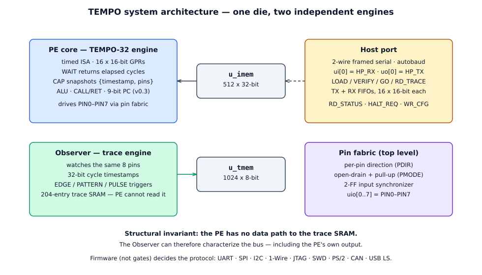
- PE core (
u_pe) — TEMPO-32 engine: 16 × 16-bit GPRs, 20 special registers, ALU + flags, CALL/RET stack, TX/RX FIFOs (16 × 16-bit each), 9-bit PC (v0.3). - Observer (
u_obs) — EDGE / PATTERN / PULSE triggers, prescaler, watermark, 204-entry trace SRAM (u_tmem). Configured by firmware via MSR or by the host via WR_CFG; read only by the host via RD_TRACE. - Host port (
u_host) — 2-wire framed serial, autobaud, ACK/NACK, onui[0](HP_RX) /uo[0](HP_TX). - Pin fabric (top level) — per-pin direction (
PDIR), open-drain + pull-up (PMODE), masking (PMASK), 2-FF input synchronizer. - SRAMs —
u_imem512 × 32-bit instruction memory;u_tmem1024 × 8-bit trace memory.
Instruction word
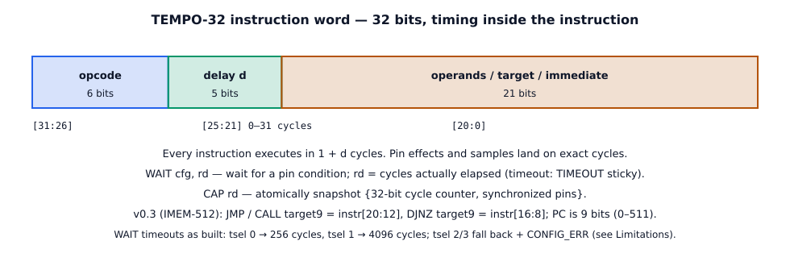
Timing contract
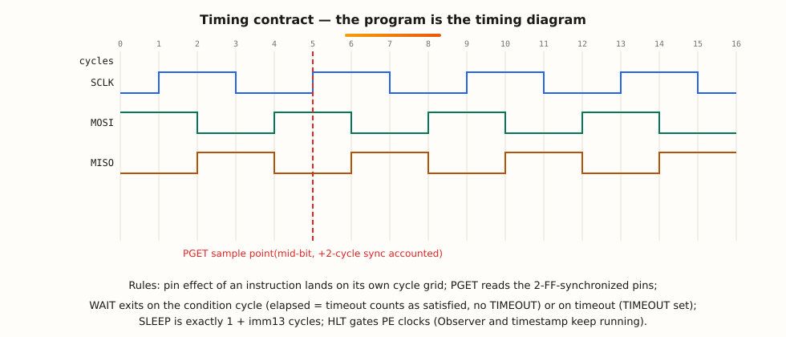
Every instruction executes in 1 + d cycles; PGET reads the
2-FF-synchronised pins (2-cycle architectural latency, accounted for in every firmware image);
SLEEP is exactly 1 + imm13 cycles; a WAIT whose condition
is true exactly at the deadline counts as satisfied (elapsed = timeout, no TIMEOUT sticky);
HLT gates PE clocks while the Observer and timestamp keep running.
Full specification: ISA v0.2 · machine-readable encoding · v0.3 note (512 words) · architecture · firmware.
Specification (IMEM-512, the submittable design)
| Item | Value |
|---|---|
| Die | 1289.28 × 710.64 µm (916,214 µm²) — exactly 6×4 tiles, 0 µm² overflow |
| Core | 1283.52 × 703.08 µm (902,417 µm²) |
| Utilisation | 41.4 % instance (31.6 % stdcell); 16,635 placed stdcells + 2 SRAM macros |
| SRAMs | u_imem 512×32, 416.64 × 191.57 µm @ (205.68, 3.78), FS ·
u_tmem 1024×8, 146.88 × 336.69 µm @ (1127.36, 3.78), FS |
| Power (typical) | 6.56 mW (internal 5.50 + switching 1.02 + leakage 0.034) |
| Clock | 50 MHz nominal; ≤ 43.8 MHz for guaranteed setup across all corners |
| Timing | Typical +5.713 ns; fast +8.578 ns; slow-corner (1.08 V, 125 °C) WNS −2.824 ns, TNS −157.48 ns, 112 violators (IMEM fetch path); hold clean at all corners |
| Pins | 24 (ui 8 + uo 8 + uio 8), no analog pins; plus clk, rst_n, ena, VPWR, VGND |
| Program / trace memory | 512 × 32-bit IMEM (v0.3) · 1024 × 8-bit TMEM = 204 entries × {timestamp[31:0], pins[7:0]}, saturating pointer |
| Sign-off | GDS ✅ · precheck 9/9 ✅ · LVS “Circuits match uniquely” ✅ · KLayout DRC 0 errors ✅ · antenna 0 ✅ · worst IR drop 0.128 mV ✅ |
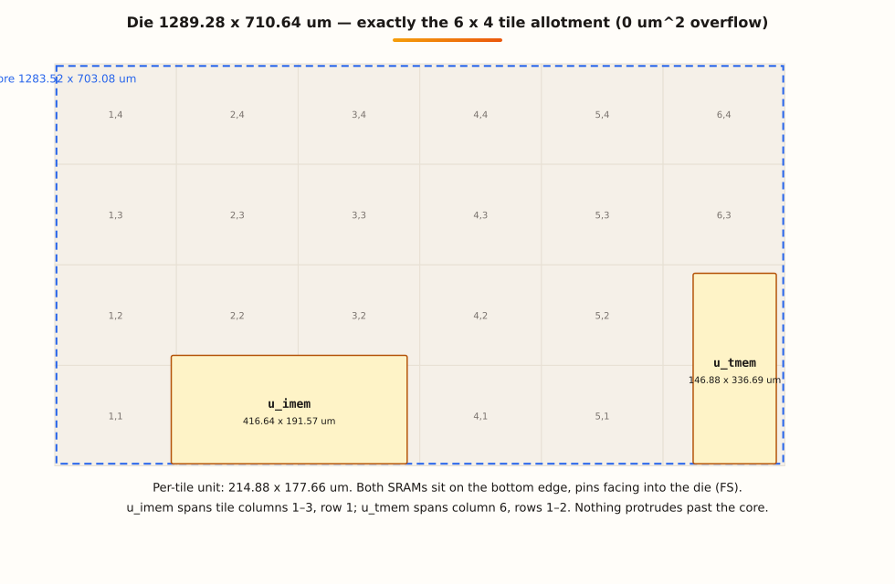
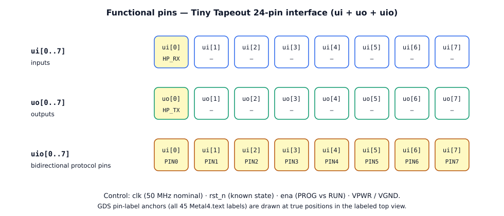
Pin functions: ui[0] = HP_RX, uo[0] = HP_TX,
uio[0..7] = PIN0–PIN7 (protocol pins, per-pin direction via PDIR,
open-drain via PMODE). Other ui/uo bits are unused/tied. Example SPI map: SCLK = PIN2,
MOSI = PIN3, CS# = PIN5, MISO = PIN0. USB map: D+ = PIN0, D− = PIN1.
Functionality — protocol capability matrix
“Proven” means: firmware assembled with the project's assembler, run against the cycle-exact golden model with a protocol-specific wire decoder (bytes, CRCs, parity, state sequences), and replayed cycle-exact against the RTL where stated. It never means “tested on the ASIC” — the ASIC is not fabricated yet; hardware evidence is from the Zybo FPGA port.
| Protocol | Evidence | Verdict |
|---|---|---|
| UART 115200 8N1 | 119 words; bit cell 434 exact; byte pitch 4349 ×3, zero deviation | Proven (sim + co-sim + Zybo) |
| SPI master mode 0, 1 MHz | 63 words; SCLK 50 ×14 zero deviation; 408 cycles/byte; loopback 0xA5→0x5A | Proven (sim + co-sim + Zybo) |
| I²C master 100 kHz | 199 words; 73 clocks at exactly 499 cycles; 2000-cycle stretch tolerated | Proven (sim + co-sim + Zybo) |
| 1-Wire master | 130 words; reset 480.02 µs; scratchpad reads 25.0625 °C | Proven (sim + co-sim + Zybo) |
| JTAG | 169 words; wire-walked TAP; IDCODE 0x1BA00477 decoded from the wire | Proven |
| SWD | 111 words; IDCODE 0x2BA01477, correct parity, zero contention | Proven |
| PS/2 | 216 words; both directions; corrupted-parity frame correctly flagged | Proven |
| CAN 2.0A @ 1 Mb/s | 255 words; TX + ACK + arbitration loss; wire CRC 0x33ea recomputed | Proven, DLC ≤ 2 |
| USB low-speed TX | 243 words; SETUP + DATA0; CRC5/CRC16 residues exact per an independent decoder | Proven |
| USB low-speed RX | 63-word standalone loop decodes 7/7 packet types (golden model only) | Partial — loop proven, not integrated |
| USB merged TX+RX | 299-word single image on the 512 build; 301-word variant on Zybo | Proven (sim + co-sim + Zybo) |
| 10BASE-T Ethernet | Manchester half-bit 2.5 cycles on the 20 ns grid; needs a 100 MHz grid and an analog PHY | Not feasible on-chip — not claimed |
USB, stated carefully. Merged TX+RX in one 299-word image is proven. A complete USB device stack (enumeration and beyond) is firmware work beyond the shipped image, not a chip limitation. The RX loop alone is proven; the 256-word integration gap (291 > 256) is closed for the merged image by the 512-word memory.
ISA reference (summary)
24 opcodes: PSET PSETR PGET PMASK PDIR PMODE (pins),
SLEEP WAIT CAP (timing/measurement), MOV LDI (data),
PUSH PULL (host FIFOs), MRS MSR (special registers),
ADD/SUB AND/OR/XOR SHL/SHR CMP (ALU + flags), JMP DJNZ CALL/RET,
HLT, EVT. v0.3: JMP/CALL target9 = instr[20:12],
DJNZ target9 = instr[16:8]; PC 9 bits (0–511). Defined behaviours:
illegal opcodes 24–63 = NOP + CONFIG_ERR; CALL on a full stack drops the call + CONFIG_ERR;
RET on an empty stack = NOP + CONFIG_ERR; unallocated special registers read as zero;
SPI mode 3 returns 0xFFFF (unsupported).
Waveforms (schematic — cycle counts are measured, shapes are illustrative)
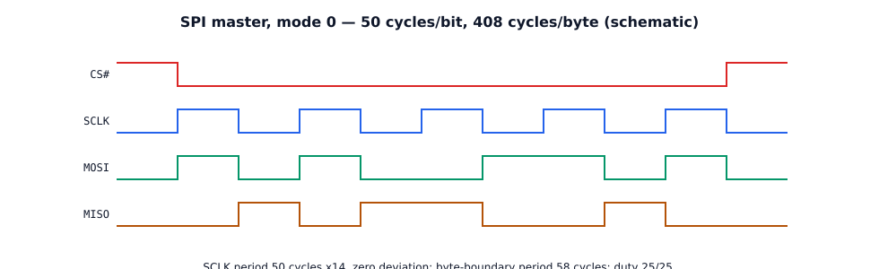
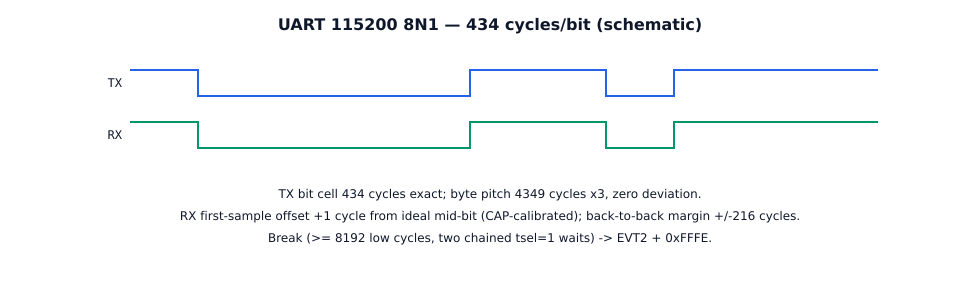
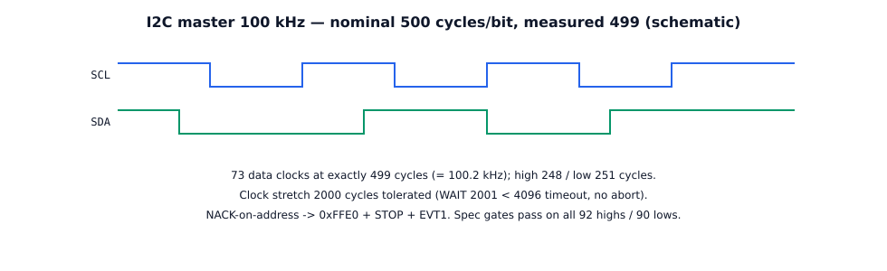
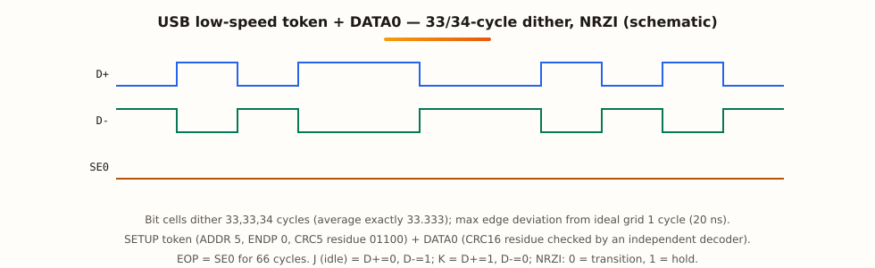
Example code — real firmware, not pseudocode
SPI master: init + command loop (excerpt from firmware/spi/spi.asm)
; TEMPO-32 SPI master -- mode 0, 1 MHz; 50 MHz core -> 50 cycles/bit.
; Host words: 0x0001 TRANSFER (PULL N, then N data words; PUSH rx bytes,
; then 0x0000 status, evt 0) · 0x0003 SET MODE (unsupported -> 0xFFFF)
; · 0x00FF HALT · other -> 0xFFFF.
; NOTE: pdir 0x01 (not 0xFF) for R_ONE -- idle levels are committed
; BEFORE pdir enables the drivers, or CS# glitches low for ~2 cycles.
pdir 0x01
pmask 0xFF
pset 0x01, d=4
pget r15 ; r15 = 1 (preserve forever)
pmask 0x2C ; pin ops touch only pins 2,3,5
pset 0x20 ; idle levels first: CS#=1, SCLK=0, MOSI=0
pdir 0x2E ; THEN drive SCLK(2), MOSI(3), CS#(5)
xor r0, r0, r0
ldi r9, 4
ldi r14, 0x0100
sub r14, r14, r15 ; r14 = 0xFF
ldi r12, 8
; RACE FIX 2026-09-27: every PULL is preceded by an RXNE wait.
cmd_loop:
jmp cmd_have, rxne
jmp cmd_loop
cmd_have:
pull r6
cmp r6, r15 ; 0x0001 = transfer?
jmp do_xfer, z
cmp r6, r13 ; 0x0003 = set mode?
jmp do_mode, z
cmp r6, r14 ; 0x00FF = halt?
jmp do_hlt, z
jmp do_unk
; bit_loop: 17 fixed insns + SLEEP16 + SLEEP3 + SLEEP14 = 50 cycles/bit.
; Measured: SCLK 50 x14 zero deviation, 58-cycle period at byte
; boundaries, 408 cycles/byte.
Copyable note: the full image is 63 words in the golden model (71 words as loaded on Zybo). The golden checker originally expected 57/407 cycles at byte boundaries; that was a stale checker expectation, corrected 2026-10-29 (57→58, 407→408) — not a chip deviation.
USB low-speed TX: host contract (from firmware/usb/usb.asm)
; USB 1.1 LOW-SPEED device-side TRANSMIT firmware ; LS bit = 666.67 ns = 33.333 cycles; cells dither 33,33,34 (average ; exactly 33.333; max edge deviation <= 1 cycle = 20 ns). ; PIN MAP: pin0 = D+, pin1 = D-, push-pull. J (idle) = 0x02, K = 0x01, ; SE0 = 0x00. NRZI: 0 = transition, 1 = hold. Stuff after six 1s. ; Host words: 0x0001 TX (PULL N 1..8, then N payload words) -> ; SETUP token (ADDR 5, ENDP 0) + DATA0 + CRC16, EOP; PUSH 0x0000, evt 0 ; 0x0002 RX: stub -> 0xFFFF (merged TX+RX lives in usb_full.asm, 299w) ; 0x00FF: HLT ; Token constants: SYNC+PID stream = 0x2D80; ADDR/ENDP/CRC5 = 0xD005. ; Independent decoder residues: CRC5 01100, CRC16 1000000000001101.
How to use the chip
- Reset. Assert
rst_nfor a known state.ena = 0= PROG mode;ena = 1= RUN mode. - Load. Over the host port (autobaud framed serial, ACK/NACK):
LOAD_IMEMwrites {addr16, data…} frames (≤ 63 words/frame);VERIFY_IMEMreads the image back byte-identical. LOAD/VERIFY are rejected while the PE runs — halt first, or load before the first GO. - Configure (optional).
WR_CFGsets pin mux, Observer trigger mode/masks, prescaler, watermark. Firmware can also configure the Observer via MSR; either way, the PE never touches trace memory. - Run.
GOreleases PE reset with PC ← 0. The host pushes command/data words (WR_RXFIFO) and pops responses/events (RD_TXFIFO). Firmware images are command-driven and signal completion withevt 0. - Observe.
RD_TRACEreads trace entries {timestamp, pins} plusOBS_PTR.RD_STATUSreturns {PE_RUNNING, PE_HALTED, TIMEOUT, TX_EMPTY, RX_FULL, TRACE_WM, TRACE_FULL, CONFIG_ERR}.HALT_REQrequests a clean stop; re-GOrestarts from PC 0. - Reload. Program reload on reselect is supported: halt, reload via LOAD_IMEM, re-verify, GO. No power cycle needed.
- Clock. Nominal 50 MHz; for guaranteed setup across all corners, run at ≤ 43.8 MHz. Timestamp resolution is one clock cycle at whatever clock you run.
How it is tested on FPGA (Zybo)
The ASIC is not fabricated yet. “Hardware-proven” means proven on the Zybo FPGA port of the same RTL + firmware, through three stages: (1) golden model (cycle-exact ISA simulator) with protocol-specific checkers; (2) cycle-exact RTL co-sim replay (SPI 855/855, UART 8,747 cycles, USB merged 6,297 cycles; 11/11 co-sims overall); (3) Zybo hardware runs checked by milestones + a run signature. The harness loader implements LOAD / VERIFY / GO / TRANSFER / RD_TXFIFO.
| Test | Milestones | Signature | Result |
|---|---|---|---|
| SPI @ 50 MHz | 0x7fff (15/15) | 0xa6b864d9 | PASS |
| UART @ 50 MHz | 0x03ff | 0x30708354 | PASS |
| I²C @ 50 MHz | 0x03ff | 0x6e253f7c | PASS |
| 1-Wire @ 50 MHz | 0x03ff | 0xbd40f1c9 | PASS |
| USB merged TX+RX (299w) @ 50 MHz | 0x03ff | 0x63063af2 | PASS |
| USB merged TX+RX (301w, ahi=1 chunk-base) @ 50 MHz | 0x03ff | 0x1611ee4b | PASS |
| Ubproof @ 50 MHz | 0x03ff | 0x3896fcc5 | PASS |
| SPI @ 125 MHz (×2 runs) | 0x7fff | 0xa6b864d9 (identical to 50 MHz) | PASS — but see the 125 MHz caveat |
| SPI fault-injection (fault 1) | caught at post-HALT RD_STATUS, fail_code 0xEE | 0xcb6b9ef1 | VACUITY-OK (no false pass) |
Overall verification depth: 643 benches, formal 32/32 on the ISA-contract subset, 11/11 cycle-exact co-sims, 4 base protocols on Zybo hardware plus stretch protocols in sim/co-sim. The 0xEE code is the vacuity guard working: an injected fault must produce a failing run, never a false pass.
Labeled layout — the real 512-word die
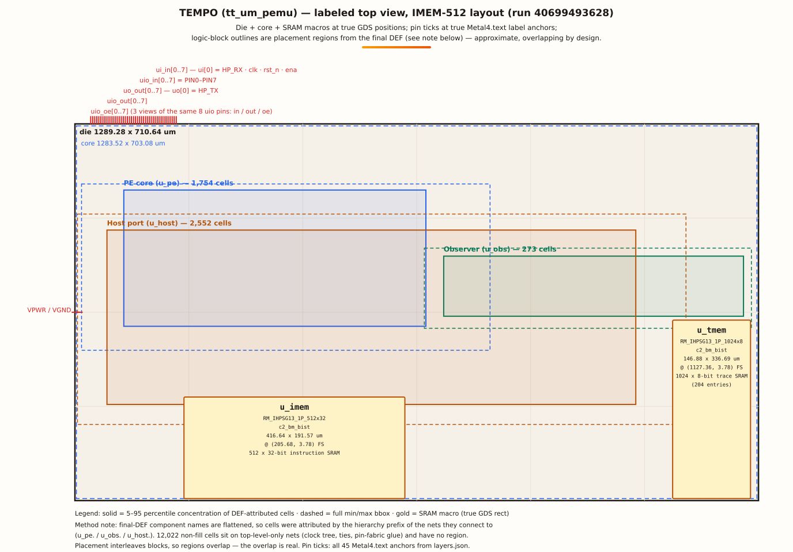
Die, core, and SRAM macros at true GDS positions (IMEM-512 run 40699493628);
pin ticks at true Metal4.text label anchors (all 45; group-bracketed because anchors are 3.84 µm
apart). Logic-block outlines are placement regions from the final DEF: solid = 5–95 percentile
concentration of DEF-attributed cells, dashed = full min/max bbox. The final DEF's component names
are flattened, so cells were attributed by the hierarchy prefix of the nets they connect to
(u_pe. / u_obs. / u_host.); 12,022 non-fill cells sit on
top-level-only nets (clock tree, ties, pin-fabric glue) and have no region. Placement interleaves
blocks, so the regions overlap — that overlap is real. An interactive version follows below.
Baseline renders (256-word design — not the 512 layout)
The two renders below are the 256-word baseline (tag
v1.0-proven-256). They show the chip's overall look; they are
not the 512-word layout — the 512 layout differs in the instruction SRAM
(416.64 × 191.57 µm, vs 416.64 × 118.78 µm at baseline) and in
standard-cell placement. For the true 512 geometry, use the labeled view above and the explorer below.
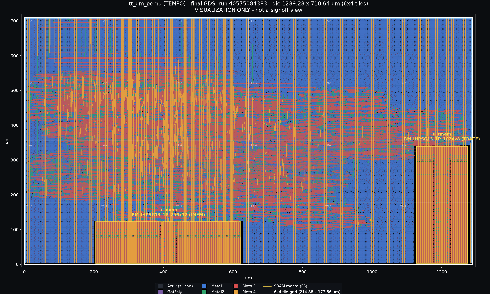
Top view render, 256-word baseline. Not the 512 layout.
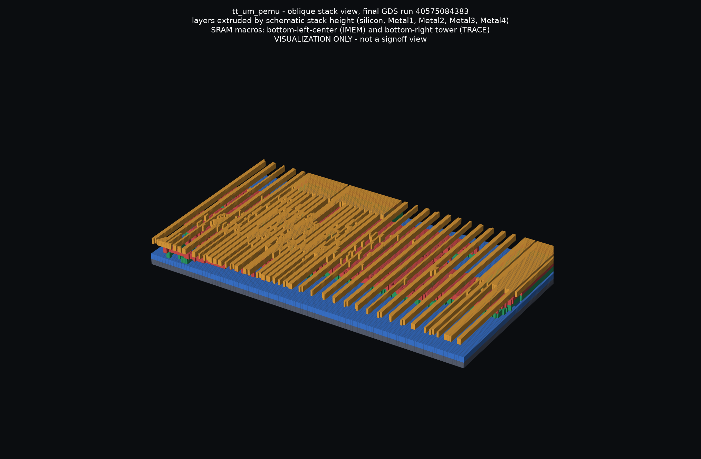
3D view render, 256-word baseline. Not the 512 layout.
GDS explorer — the real 512 layout, layer by layer
Drag to pan, scroll or pinch to zoom. On touch: drag pans, pinch zooms; swipe outside the canvas to scroll the page. Hover to probe µm coordinates (GDS, y up), the nearest pin label anchor, and macro hits. Click a layer name for its GDS number, polygon count, and fidelity class; click a gold macro block for its facts. The toggles below are shared with the 3D stack view.
3D exploded stack — orbit, zoom, explode
Drag to orbit/rotate, scroll or pinch to zoom, explode slider to separate the layers. On touch: swipe outside the canvas to scroll the page. Hover or click a layer slab or a gold macro block for its name, role, GDS number, polygon count, and fidelity class. Per-layer visibility toggles are shared with the 2D explorer's layer state.
Honest limitations
Bounded, characterised behaviours — full evidence in CHARACTERIZED_LIMITS.md and OPEN_ITEMS_AUDIT.md (2026-10-29 audit). After that audit, no unhandled chip-functionality bug remains; the functionality-affecting list is exactly: the slow-corner timing guidance, the T17 decision item, and the limits below.
- CAN DLC ≤ 2. No data RAM; all 16 GPRs allocated mid-frame. DLC > 2 arguments are consumed/discarded, PUSH 0xFFFF. IMEM-512 does not lift the cap; redesign out of scope.
- UART TX host starvation blocks. No timeout, no 0xFFFD abort on this path (the abort is a safety net for pulls that bypass the RXNE wait, which normal operation never does). Recovery: supply the missing word, or host reset/reload. Firmware-demo limitation, not a PE bug.
- WAIT long timeouts not implemented (T17, decision item). tsel 0 → 256, tsel 1 → 4096; tsel 2/3 fall back to 256/4096 + CONFIG_ERR. Largest elapsed ever written is 4096 — no overflow can occur as built. Saturating at 0xFFFF is not implemented and not claimed; the standing recommendation (rule tsel 2/3 out of the submitted ISA, chain tsel=1 waits) is for the ISA lead.
- SPI at 125 MHz: observed, not guaranteed. Proven point is 50 MHz. Baseline failed deterministically at 125 MHz (0x13); the 512 build passed twice with the identical signature, but the baseline failure was never root-caused and no fix is claimed.
- Observer PULSE mode watches pin 0 only. Top level ties pin-select to 0. EDGE/PATTERN unaffected. Trace saturates at 204, never wraps; TRACE_WM sticky, cleared only by OBS_CLR.
- Observer hardware capture is the remaining score item, not a chip bug.
Sim/co-sim only (bench
tb_observer, 35 checks). No hardware trace-SRAM capture has ever been demonstrated: the Zybo harness has no RD_TRACE path (loader: LOAD / VERIFY / GO / TRANSFER / RD_TXFIFO only). The silicon path exists (host 0x07 RD_TRACE, MSR Observer config) but needs a scoped harness build. No board capture is claimed anywhere on this page. - USB device stack / 10BASE-T. Merged USB TX+RX proven; a full device stack is firmware work beyond the shipped image. 10BASE-T is not feasible on-chip and is not claimed.
Still open (non-functional)
- Formal competition entry — form not yet published by Jane Street; deadline 18 January 2027. A perfect chip with no entry scores zero.
- GitHub Pages / viewer job — repo public since 2026-10-29, Pages enabled
from main +
/docs, site live. The viewer job's old Pages-404 cause is gone; its verdict on the current gds run is pending at the time of writing. - Phase 7 verification depth — queued, not started; adds depth, not existence.
- Display-name collision — another public project uses “Tempo”; repo name
tt_um_pemuis fixed by Tiny Tapeout convention. Undecided.